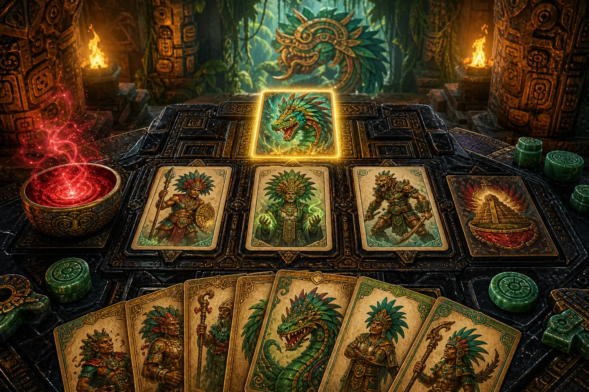
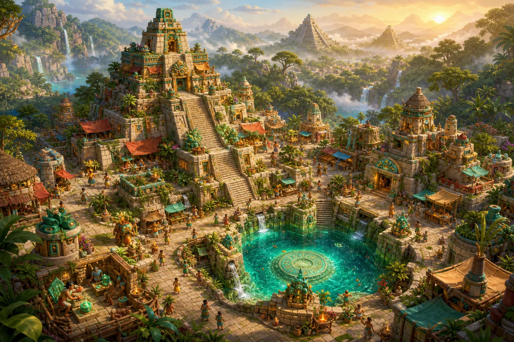

01
Sacrifiez avec audace
Transformez une perte tactique en sang, effets bonus et montée de Faveur. La meilleure carte n’est pas toujours celle qui survit.
Deckbuilding roguelike · iOS
Sacrifiez vos guerriers. Invoquez sept divinités. Rebâtissez un temple capable de défier la fin du monde.
La prophétie s’éveille
Découvrez les premières images de Kukulcan, ses dieux implacables et le cycle de sacrifices qui façonnera chacune de vos parties.

Le sacrifice est votre arme
Gardez vos guerriers pour tenir le champ de bataille, ou offrez-les aux dieux pour libérer leur pouvoir. Chaque tour est un dilemme. Chaque offrande vous rapproche d’un ultime dévastateur.
Posez vos communes et construisez vos combos.
Sacrifiez au bon moment pour gagner du sang et de la faveur.
Invoquez votre dieu et renversez le combat.
Une run. Mille décisions.
01
Transformez une perte tactique en sang, effets bonus et montée de Faveur. La meilleure carte n’est pas toujours celle qui survit.
02
Accomplissez les vœux de votre dieu. À dix points, déclenchez un ultime spectaculaire qui change le destin du combat.
03
Combats, élites, cénotes, événements et trésors : choisissez votre chemin à travers trois actes, jusqu’au boss final.
Sept puissances. Sept styles de jeu.
Chaque divinité vous confie un vœu, quatre capacités et un ultime unique. Votre deck ne se joue jamais tout à fait de la même façon.
Vent divin
Éclipse
Déluge
Soleil dévorant
Marche des morts
Prophétie
Guerre totale

Votre défaite nourrit demain
Chaque run rapporte des éclats de jade. Débloquez de nouveaux dieux, enrichissez le Codex et améliorez votre village. Ici, aucune aventure n’est vraiment perdue.
Journal du développement
Les sept divinités possèdent désormais leur propre manière de transformer un sacrifice en moment décisif.
Éclats de jade, salles à améliorer et niveaux d’Ascension prolongent désormais l’aventure après le boss final.
La prophétie approche
Kukulcan est en développement pour iPhone et iPad. Suivez le projet pour être averti de la prochaine bêta.
Suivre le projet sur GitHub